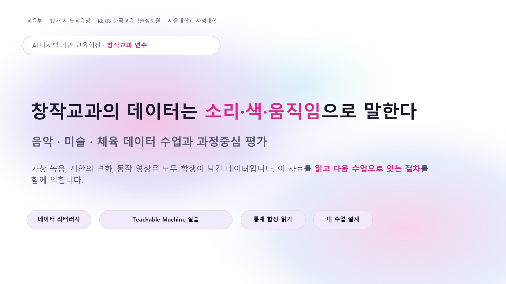

가창 녹음, 시안의 변화, 동작 영상은 모두 학생이 남긴 데이터입니다. 오늘 이 연수장에서는 여러분이 지금 이 사이트에 남기는 로그가 그대로 ⑪차시 학습분석의 표본이 되고, ⑫차시에서는 그 데이터를 성장의 근거로 되돌려 다음 수업을 재설계합니다.

시안 6장은 1분에 나오지만, 고르는 눈은 수업이 길러야 합니다. 데이터는 그 눈을 훈련하는 재료입니다 — ⑪에서 데이터를 읽는 법을, ⑫에서 그 데이터를 다음 수업으로 되돌리는 법을 다룹니다. 근거가 되는 연구 원문은 연구 자료실에서 바로 열 수 있습니다.
순서대로 진행합니다. 각 카드를 누르면 해당 페이지로 이동합니다. 분홍 카드는 듣고 보는 시간, 파란 글씨 카드는 직접 하는 실습입니다.
여섯 개 설계 언어를 되살리고, 12문항 스피드 퀴즈로 몸을 풉니다.
핵심 아이디어부터 도구 3기준까지. 막히면 🔴 신호를 눌러 주세요.
다섯 관점·리터러시 함정·교과별 데이터 — 그리고 우리의 라이브 로그.
⑪의 데이터를 근거로 갤러리 워크·액션 플랜·KPT 회고까지.
⑪은 읽는 법, ⑫는 되돌리는 법입니다. 두 세션 모두 같은 원칙을 따릅니다 — 데이터가 잘하는 일과 교사만 할 수 있는 일을 구분한다.
데이터를 보는 다섯 관점, 잘못 읽기 쉬운 세 가지 함정, 교과별 데이터와 도구 — 그리고 지금 이 연수장에 쌓이고 있는 우리의 로그를 직접 열어 봅니다.
Feed Up → Back → Forward, 갤러리 워크 상호 크리틱, 그리고 내일 당장 실행할 최소 실행 단위 액션 플랜과 KPT 회고까지.
그래미를 받은 AI 복원 비틀즈, AI 사진상을 거부한 작가, 0.5초 오프사이드 판독 — 세 교과의 "지금"을 영상으로 봅니다.
강의에 나온 모든 연구의 논문 원문을 한 번의 클릭으로 엽니다.